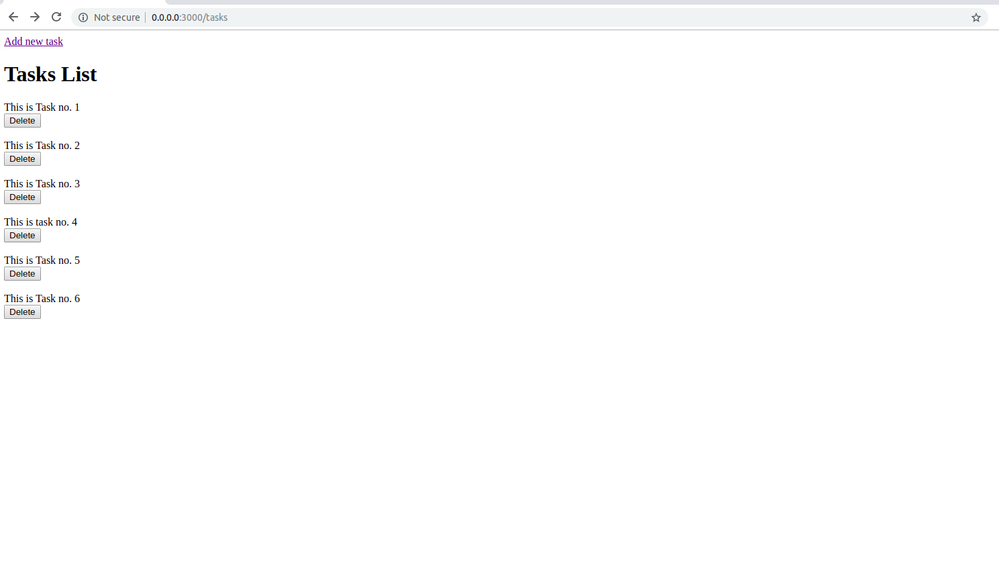
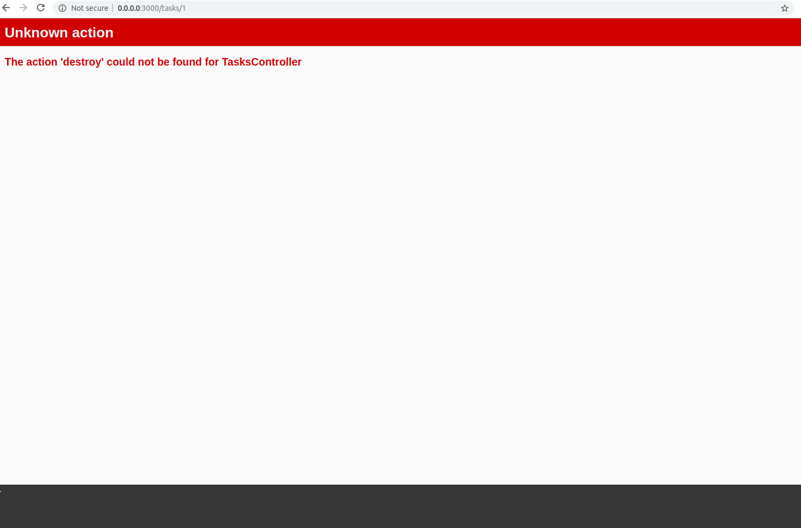

Delete the task
id: chapter-7 title: Delete the task
In the last chapter, we saw how to update a task to the database. In this chapter we'll see how to delete a task.
Adding button to delete the task
Let's add delete button to Index page.
For delete button we'll use button_to helper method.
.
.
.
<h1>Tasks List</h1>
<% @tasks.each do |task| %>
<%= task.description %>
<%= button_to "Delete", task, :method => :delete %></br>
<% end %>
Here first argument for button_to is "Delete", which is display name of the button.
Then second argument is task, it is similar to url_for for the particular task.
Third argument is :method. We can use various methods like get, post, delete.
Here we want to delete the task so for deleting the method will be delete.

After clicking the button, You will get error No route matches [DELETE].
So let's add the necessary route for delete action.
Open the file /config/routes.rb and add the following line so that our router directs the control to the 'destroy'
action of Task controller.
Rails.application.routes.draw do
.
.
.
delete '/tasks/:id', to: 'tasks#destroy'
end

This error was seen because we had not added destroy action in the Task contoller.
Implement destroy action in TasksController
Let's implement the destroy action to our TasksController.
class TasksController < ApplicationController
.
.
.
def destroy
task = Task.find(params[:id])
task.destroy
@tasks = Task.all
redirect_to tasks_url
end
private
.
.
.
end
params[:id] contains the id of task to be deleted. To delete the task use task.destroy.
After destroying the task we are redirecting to tasks index using redirect_to tasks_url.
Flow of deleting a task
So let's go through the Destroy flow of our task.
- When we click the
deletebutton, button_to uses:method => deleteso delete request goes to router and router directs the control to destroy action of TasksController. - Id of the Task is passed to controller through params. Then the particular task get using
Task.find(params[:id]). task.destroywill remove the task's entry from the database.- Then we are fetching all the tasks using
Task.all. - Then using the
redirect_to tasks_urlwe are again loading the page that displays the list of tasks.
Verify results on Rails console
Let's verify whether the task has actually got deleted from the database.
$rails console
irb(main):001:0> Task.where(description: 'This is task no.2')
Task Load (0.2ms) SELECT "tasks".* FROM "tasks" WHERE "tasks"."description" = ? LIMIT ? [["description", "This is task no.2"], ["LIMIT", 11]]
=> #<ActiveRecord::Relation [#<Task id: 7, description: "This is task no.2", created_at: "2019-02-07 09:43:10", updated_at: "2019-02-07 09:43:10">]>
irb(main):002:0>
We are fetching the task which has description 'This is task no.2' using Task.where(description: 'This is task no.2').
And we got Task record with Task id: 7, description: "This is task no.2".
Now start server again and delete the task which has description 'This is task no.2'.
Again start Rails console.
$rails console
irb(main):001:0> Task.where(description: 'This is task no.2')
Task Load (0.2ms) SELECT "tasks".* FROM "tasks" WHERE "tasks"."description" = ? LIMIT ? [["description", "This is task no.2"], ["LIMIT", 11]]
=> #<ActiveRecord::Relation []>
irb(main):002:0>
Now we did not get Task record with Task id: 7, description: "This is task no.2". It means it is actually deleted from the database.